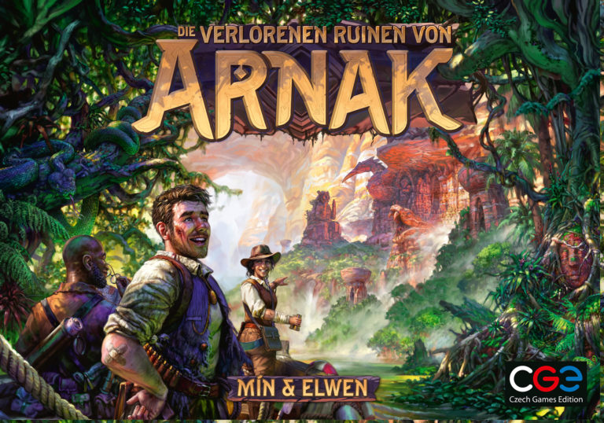

Zurück zur Übersicht
Die verlorenen Ruinen von Arnak

Typ
Eurogame mit Deckbuilding-Elementen
Beschreibung
In "Die Verlorenen Ruinen von Arnak" erkunden die Spieler als konkurrierende Forscher-Teams die gleichnamige
Insel. Ziel ist das erreichen des meisten Ruhms durch das Entdecken neuer Orte, sammeln der dortigen
Ressourcen und investieren in Forschung und Publikation. Kurzweilig sind die jeweils schnellen Spielerzüge,
die je Runde solange durchgeführt werden bis alle Forscher, Handkarten und Sonderfähigkeiten erschöpft sind.
Das Kaufen neuer Handkarten und Anheuern von Gefolgsleuten macht die eigenen Züge dabei von Runde zu Runde
effektiver.
Für
- Combo-Bastler
- Solo-Künstler
- Wettläufer
Schnell erklärt
- Brett aufbauen, ohne zusätzliche Orte, ohne Buch, ohne Gefolgsleute, ohne Karten.
- Ziel: Möglichst viel Ruhm bis zum Ende der 5 Runden sammeln.
- Exemplarische Handkarten und Startknete austeilen.
- Rundensystem erklären: Anzahl Züge variabel.
- Hauptaktionen durchgehen: Zu Ort reisen, forschen, neuen Ort erkunden.
- Karten auslegen, Karten kaufen erklären.
- Nebenaktionen erklären.
- Restliche Details erklären.
Zurück zur Übersicht